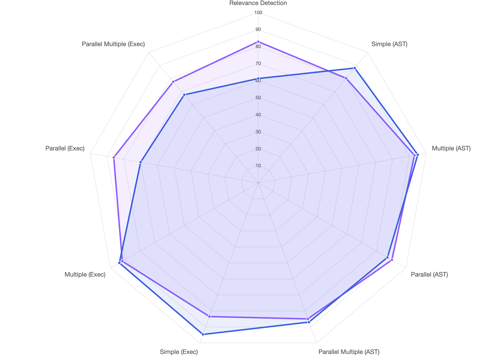
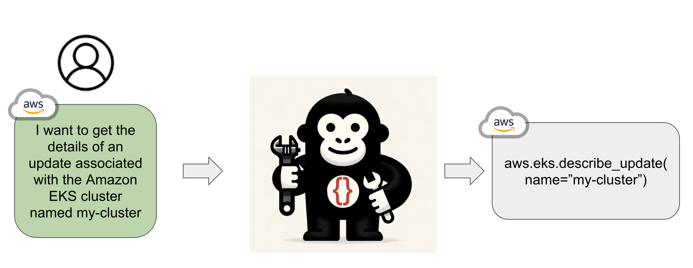

|
Fanjia Yan I'm a M.S. student at Berkeley EECS, where I focus on Language Model Agents and Tool usage . I did my undergraduate degree at UC Berkeley. I have previously or currently interned at Nvidia, Amazon, and Aqueduct. |

|
ResearchI'm generally interested in interested in LLM agentic framework and Function calling/ Tool usage. Some of my works are listed below: |
|

|
Berkeley Function Calling Leaderboard
Fanjia Yan*, Huanzhi Mao*, Charlie Cheng-Jie Ji*, Ion Stoica, Joseph E. Gonzalez, Tianjun Zhang, Shishir G. Patil project page / github page The first comprehensive evaluation on the LLM's ability to call functions and tools |

|
LiveCodeBench: Holistic and Contamination Free Evaluation of Large Language Models for Code
Naman Jain, King Han, Alex Gu, Wen-Ding Li, Fanjia Yan, Tianjun Zhang, Sida Wang, Armando Solar-Lezama Koushik Sen, Ion Stoica project page / code / arXiv LiveCodeBench collects problems from periodic contests platforms and uses them for constructing a holistic benchmark for evaluating Code LLMs across variety of code-related scenarios continuously over time. |
|

|
Openfunctions
Charlie Cheng-Jie Ji*, Huanzhi Mao*, Fanjia Yan*, Ion Stoica, Joseph E. Gonzalez, Shishir G. Patil Tianjun Zhang, project page / Huggingface page A SOTA open source generally purpose function calling model. |